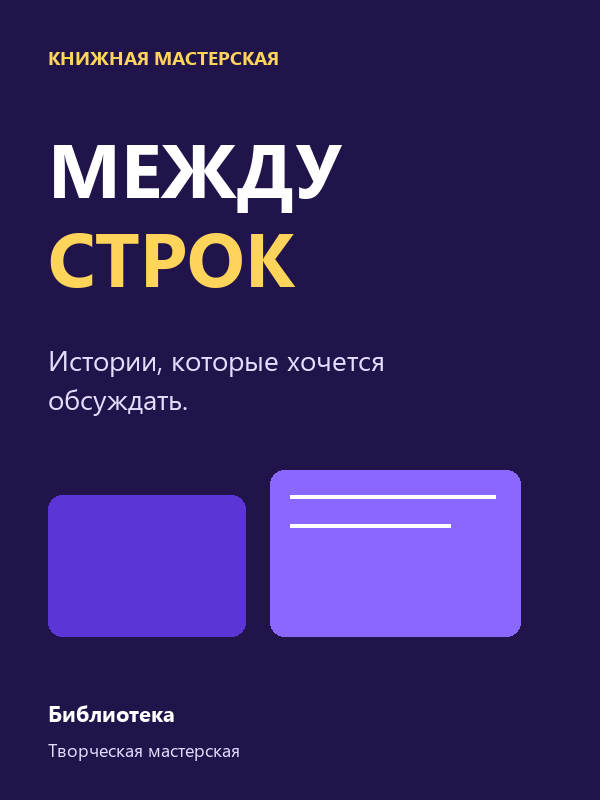
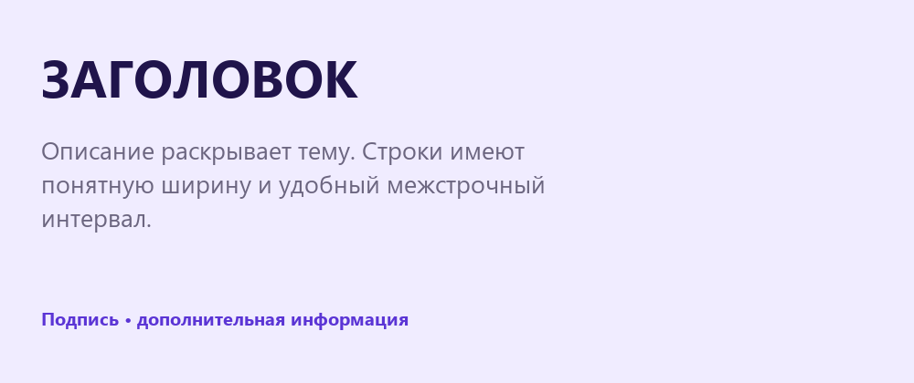

Текст и типографика
Создай афишу книжной мастерской: выдели главное, настрой текст и сделай информацию удобной для чтения.
Перейти к заданию ↗
Перед новой практикой
Три небольших вопроса по предыдущему уроку. Выбери ответ и нажми «Проверить».
Клавиши для практики
Сочетания для Windows. Переключи клавиатуру на английскую раскладку. Перед командой заверши ввод текста.
Текст - отдельный слой
Text (текст) позволяет добавлять надписи. Нажми T и щёлкни на рабочей области: появится текст, который растёт по мере ввода. Для абзаца нажми T и протяни область нужной ширины: строки будут переноситься внутри неё.

Заголовок и абзац решают разные задачи. У абзаца есть заданная ширина.
Попробуй в Figma
Размер и начертание
Выдели текст. В правой панели в разделе Typography (типографика) выбери шрифт, Size (размер) и начертание. Regular - обычное, Bold - жирное. Один шрифт с двумя начертаниями уже помогает разделить роли текста. Для этой афиши достаточно Inter.

Крупный Bold привлекает внимание к названию, обычный текст раскрывает подробности.
Попробуй в Figma
Идеи в кадре
Соберём идеи и превратим их в аккуратную творческую работу. У текста есть понятные роли и свободное место.
Нажми на варианты и сравни.
Интервалы и читаемость
Line height (межстрочный интервал) задаёт расстояние между строками. Для абзаца размером 24 px попробуй 34 px. Выравнивание по левому краю помогает глазу находить начало строки. Слишком узкая область создаёт много переносов; слишком длинная строка затрудняет чтение.

Тексту нужен воздух между строками и вокруг блока.
Попробуй в Figma
Афиша «Между строк»
Собери афишу книжной мастерской «Между строк». В шаблоне есть образец и тексты для начала работы. Придумай собственное расположение и цвета, сохраняя понятную иерархию.
Кнопка создаёт копию шаблона. Для этого нужно войти в свой аккаунт Figma. Работай в собственной копии. Инструкции и образцы заблокированы.
Проверь свою работу
Отмечай пункты после проверки в Figma.
Если закончил раньше
Сделай вторую версию той же афиши с другим главным акцентом. Сравни, что первым замечает зритель.